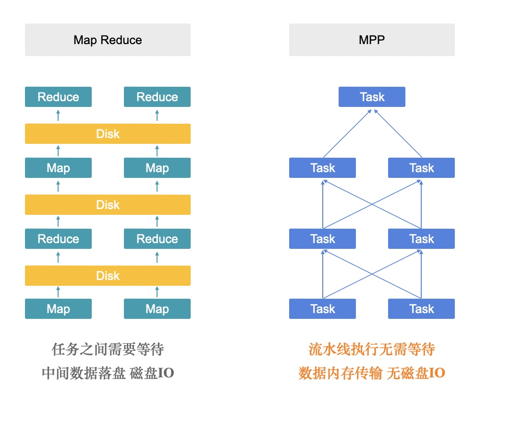
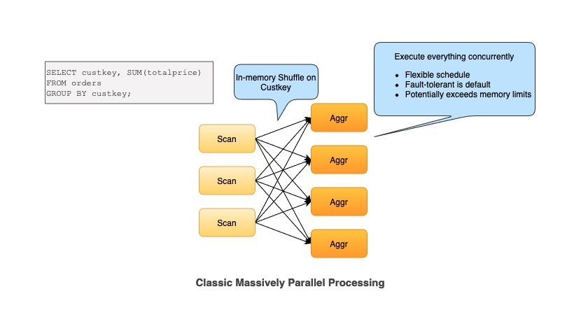
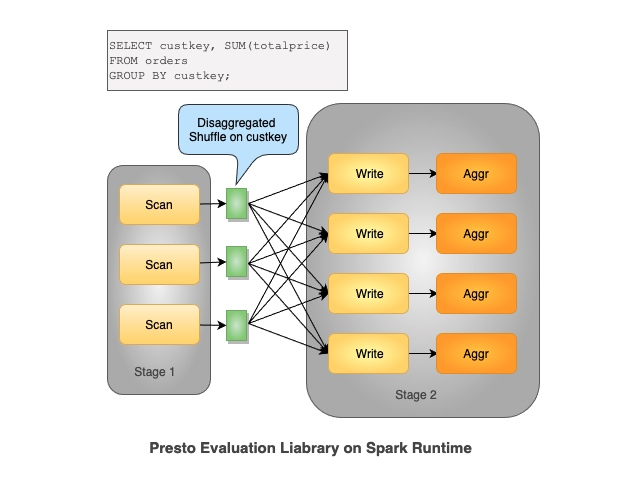

MPP Pipeline VS Grouped Execution VS Stage By Stage
作者: 康凯森
日期: 2023-04-08
分类: OLAP
- What Is In MPP Pipeline
- What Is Grouped Execution
- What Is Stage By Stage
- MPP Pipeline VS Stage By Stage
- Grouped Execution VS Stage By Stage
- 参考资料
Presto 最近发布了新的论文，Presto: A Decade of SQL Analytics at Meta 刚好 Presto 同时支持了 MPP Pipeline , Grouped Execution, Stage By Stage 3 种分布式执行模式，就想把这3种执行模式对比下。
What Is In MPP Pipeline


如图所示，本文特指以 StarRocks,Presto 为代表的 MPP 查询引擎，具有以下特点：
- 整个分布式执行是全部 In Memory 的
- 整个分布式执行是 Pipeline 的，每个 Fragment 会 Streaming 的传输数据给下一个 Fragment，不需要一个 Fragment 处理完所有数据再传输给下一个 Fragment
- 支持 Shuffle， Shuffle 是 In Memory 和 Streaming 的
What Is Grouped Execution

Grouped Execution 其实很好理解，大家可以从 Colocate join 来理解，如上图，T1 和 T2 两张表的数据在导入时已经按照 Id 列分桶，所以相同的 Id 的数据都在一台节点上，Join 时就不需要重新 shuffle，但还有一个重要的点是：每个分桶的 Join 执行完成后就可以直接返回 Join 的最终结果，所以当我们内存不足时，我们就不需要所有节点或者分桶上面的 Join 同时启动，我们可以按照一个分桶一个分桶依次执行 Join 操作，这样我们需要内存的资源就会减少几十倍，同时也可以按照分桶粒度进行重试和容错，这就是 Grouped Execution 的核心原理。
那如果两张表的数据没有提前按照 Join 的 Column 分桶呢？答案很简单，如下图所示，和我们查询时处理 Shuffle Join 一样，额外 Shuffle 一次就行，并将 Shuffle 的结果持久化下来，然后过程就和上面介绍的 Colocate 处理的流程一样了。

What Is Stage By Stage

如图所示，本文特指以 MapReduce, Spark 为代表的批处理引擎，具有以下特点：
- 整个分布式执行是 Stage By Stage 的，每个 Stage 会落盘
- Shuffle 需要落盘
MPP Pipeline VS Stage By Stage
1 端到端的延迟：
以 StarRocks 和 Presto 为代表的 MPP 查询引擎，端到端延迟更低，因为每个 Fragment 有数据就会立即发送给下游，用户接受到第一条数据的时间更短。
2 容错或者批处理能力：
以 Spark 为代表的 Stage By Stage 的执行模式容错能力更好， 因为在每个 Stage 执行结束时是一个 物化点或者 Checkpoint 点，失败后可以从上一个 Stage 恢复，但是 MPP Pipeline 执行模式一旦失败，就需要整个查询重新执行，所以不适合执行 ETL 类执行时间很长的SQL。
3 内存使用：
MPP Pipeline 对于复杂查询需要的内存可能更多，因为 Stage By Stage 模式每个 Stage 执行结束后，就可以立即释放内存，但是 MPP Pipeline 模式可能需要在多个 Fragment 中保留多个 Hash 表（Hash Join 和 Hash Aggregate），只有整个查询执行结束，这些 Hash 表 才可以一起释放。
4 调度方式：
StarRocks 和 Presto 是 All At Once 的调度，整个查询所有 Fragment 需要全部就绪，但是 Spark 是 Stage By Stage 的，任务是按照 Stage 逐批启动的。 （注： Presto 也支持 phased 调度方式，优化了这一点）
5 可扩展性：
StarRocks 和 Presto In Memory Shuffle 的方式在几百上千节点的时候，可能会受到内存，连接数等资源的限制
6 自适应执行：
Spark Stage By Stage 的执行方式更容易在每个 Stage 结束后收集统计信息，重新规划 Plan， MPP pipeline 模式自适应的难度更大一些
7 慢节点问题：
依靠推测执行和容错，Spark 的Stage By Stage 执行方式可以相对更好的处理慢节点问题。
Grouped Execution VS Stage By Stage
因为 Grouped Execution 和 Stage By Stage 都是想解决 ETL 执行的问题，所以我们对比主要集中在 ETL 相关的点。
1 容错粒度：
Grouped Execution 容错的粒度比较粗，必须以 Shuffle 为容错点，而 Spark 可以以任意的 Mapper 和 Reducer 为容错点，查询重试的粒度更细，并且 Mapper 和 Reducer 可以独立调度和重试
Grouped Execution 不能容忍节点粒度的 Crash，但是 Spark 可以
2 隔离级别：
Grouped Execution 的隔离粒度是节点级别， Spark 是 Container 级别, 粒度更细
3 可扩展性和稳定性：
Grouped Execution 依然是 In Memory 的 Shuffle， 稳定性不如 Spark 的 Shuffle Service。
由于 Grouped Execution 的上述缺陷，Presto 发起了 Presto on Spark 项目，并逐步代替了 Grouped Execution，也宣告了 Grouped Execution 这个项目的失败。
参考资料
- Presto 2018 论文: Presto: SQL on Everything
- Presto 2023 论文: Presto: A Decade of SQL Analytics at Meta
- Presto Unlimited: MPP SQL Engine at Scale
- Scaling with Presto on Spark
《OLAP 性能优化指南》欢迎 Star&共建
欢迎关注微信公众号